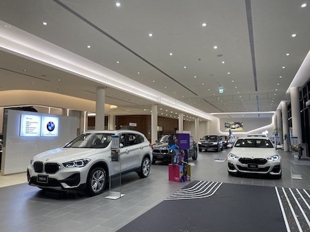
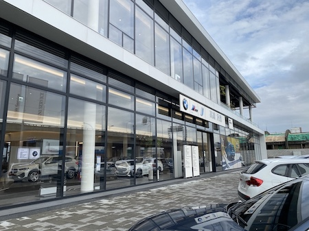

生涯規劃
生涯規劃
我是一位很活潑又外向的男孩，平常講話也蠻幽默的，
我很喜歡交朋友，也希歡到處找人聊天，
因為不怕生，所以即使初次見面，我仍然可以跟對方有說有笑，
平時在班上也擔任實習股長及經濟小老師，幫忙同學處理各項競賽報名，
還有協助同學經濟任何問題，也因為我態度積極且很負責任，
所以深受老師及師長的愛好，已經連續當了幾屆的幹部，為同學服務了。
再過不久的將來，

我也即將邁入最真實且最忙碌的階段了-工作
「人因夢想而偉大，因實踐夢想而不凡」
我很希望在未來求職的路上，我可以找到理想的工作，
我一直很希望我可以把自己喜歡的事，變成我的工作，
好處就是：因為興趣的加成，使工作起來更得心應手，
壞處就是：那樣興趣如果是供你休閒放鬆的，那你可能會有極大反彈，
我自已未來很嚮往成為一位「充滿服務熱忱用真心對待客人的『銷售顧問』」，
我想用我的專業及我的介紹，把最優秀的產品介紹給顧客，

並且用最好的服務對待每位顧客，而我最想當任的是-汽車銷售，
在現今流動快速的社會下，也必須找到替代方案或是副業，
我想當一位專業的婚禮攝影師，透過正職工作的閒暇之餘，
為這對新人，紀錄下屬於他們共同美好的回憶。
最終，我想說的是
職業不分貴賤，必須尊重專業，公平對待每個人！
擇你所愛，愛你所擇！！！